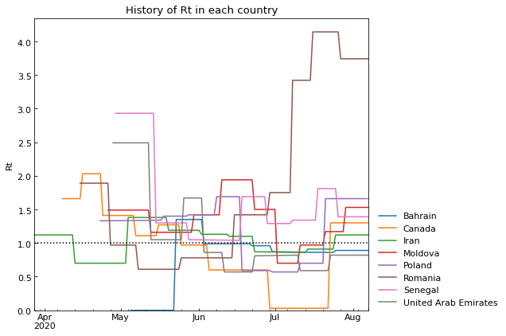

Usage (details: policy measures)¶
Here, we will analyse the relationship of policy measures and parameter values of SIR-derived ODE models. Policy measures are tracked by Oxford Covid-19 Government Response Tracker (OxCGRT).
Preparation¶
[1]:
# Standard users
# !pip install covsirphy
# Developers (Note: this notebook is in example directory)
import os
os.chdir("../")
[2]:
from pprint import pprint
[3]:
import covsirphy as cs
cs.__version__
[3]:
'2.6.0-theta.new.72.167.fix.120.155.157.163.164.165.174.188'
[4]:
# Standard users and developers
data_loader = cs.DataLoader("input")
# The number of cases (JHU style)
jhu_data = data_loader.jhu(verbose=False)
# Population in each country
population_data = data_loader.population(verbose=False)
# Government Response Tracker (OxCGRT)
oxcgrt_data = data_loader.oxcgrt(verbose=False)
# Description/citation
print(oxcgrt_data.citation)
(Secondary source) Guidotti, E., Ardia, D., (2020), "COVID-19 Data Hub", Working paper, doi: 10.13140/RG.2.2.11649.81763.
We can get Citation list of primary sources with DataLoader(...).covid19dh_citation
Class for policy measure analysis¶
We will PolicyMeasures class to find relationship of policy measures and parameter values of SIR-derived ODE models.
[5]:
# Create analyser with tau value 360 [min] (can be changed)
analyser = cs.PolicyMeasures(jhu_data, population_data, oxcgrt_data, tau=360)
# The number of registerd countries
len(analyser.countries)
[5]:
184
[6]:
# We can get Scenario instance for detailed scenario analysis
type(analyser.scenario("Japan"))
[6]:
covsirphy.analysis.scenario.Scenario
Set phases with S-R trend analysis¶
We will perform S-R trend analysis to set phases in all countries. Countries which do not have 9th phases will be un-registered for the next analysis. This number will be adjusted for your analysis.
[7]:
# Set phases with S-R trend analysis
analyser.trend(min_len=9)
# The number of countries
len(analyser.countries)
[7]:
11
[8]:
phase_len_dict = analyser.phase_len()
pprint(phase_len_dict, compact=True)
{9: ['Canada', 'Senegal', 'Portugal', 'Italy', 'Guinea', 'Kuwait',
'United Arab Emirates'],
10: ['Iran', 'Poland', 'Bahrain', 'Czech Republic']}
[9]:
# Here, only show the countries which have the most phases
countries_show = max(phase_len_dict.items(), key=lambda x: x[0])[1]
# Show summary
analyser.summary(countries=countries_show)
[9]:
| Type | Start | End | Population | ||
|---|---|---|---|---|---|
| Country | Phase | ||||
| Iran | 1st | Past | 28Mar2020 | 12Apr2020 | 81800269 |
| 2nd | Past | 13Apr2020 | 04May2020 | 81800269 | |
| 3rd | Past | 05May2020 | 20May2020 | 81800269 | |
| 4th | Past | 21May2020 | 02Jun2020 | 81800269 | |
| 5th | Past | 03Jun2020 | 15Jun2020 | 81800269 | |
| 6th | Past | 16Jun2020 | 26Jun2020 | 81800269 | |
| 7th | Past | 27Jun2020 | 06Jul2020 | 81800269 | |
| 8th | Past | 07Jul2020 | 18Jul2020 | 81800269 | |
| 9th | Past | 19Jul2020 | 30Jul2020 | 81800269 | |
| 10th | Past | 31Jul2020 | 13Aug2020 | 81800269 | |
| Poland | 1st | Past | 23Apr2020 | 10May2020 | 37974750 |
| 2nd | Past | 11May2020 | 21May2020 | 37974750 | |
| 3rd | Past | 22May2020 | 03Jun2020 | 37974750 | |
| 4th | Past | 04Jun2020 | 13Jun2020 | 37974750 | |
| 5th | Past | 14Jun2020 | 24Jun2020 | 37974750 | |
| 6th | Past | 25Jun2020 | 04Jul2020 | 37974750 | |
| 7th | Past | 05Jul2020 | 17Jul2020 | 37974750 | |
| 8th | Past | 18Jul2020 | 26Jul2020 | 37974750 | |
| 9th | Past | 27Jul2020 | 04Aug2020 | 37974750 | |
| 10th | Past | 05Aug2020 | 13Aug2020 | 37974750 | |
| Bahrain | 1st | Past | 06May2020 | 25May2020 | 1569439 |
| 2nd | Past | 26May2020 | 04Jun2020 | 1569439 | |
| 3rd | Past | 05Jun2020 | 13Jun2020 | 1569439 | |
| 4th | Past | 14Jun2020 | 21Jun2020 | 1569439 | |
| 5th | Past | 22Jun2020 | 29Jun2020 | 1569439 | |
| 6th | Past | 30Jun2020 | 07Jul2020 | 1569439 | |
| 7th | Past | 08Jul2020 | 15Jul2020 | 1569439 | |
| 8th | Past | 16Jul2020 | 23Jul2020 | 1569439 | |
| 9th | Past | 24Jul2020 | 02Aug2020 | 1569439 | |
| 10th | Past | 03Aug2020 | 13Aug2020 | 1569439 | |
| Czech Republic | 1st | Past | 07Apr2020 | 16Apr2020 | 10649800 |
| 2nd | Past | 17Apr2020 | 27Apr2020 | 10649800 | |
| 3rd | Past | 28Apr2020 | 14May2020 | 10649800 | |
| 4th | Past | 15May2020 | 04Jun2020 | 10649800 | |
| 5th | Past | 05Jun2020 | 24Jun2020 | 10649800 | |
| 6th | Past | 25Jun2020 | 05Jul2020 | 10649800 | |
| 7th | Past | 06Jul2020 | 16Jul2020 | 10649800 | |
| 8th | Past | 17Jul2020 | 25Jul2020 | 10649800 | |
| 9th | Past | 26Jul2020 | 03Aug2020 | 10649800 | |
| 10th | Past | 04Aug2020 | 13Aug2020 | 10649800 |
Parameter estimation¶
we will estimate the parameter values with SIR-derived ODE models in each country.
[10]:
# Parameter estimation with SIR-F model
analyser.estimate(cs.SIRF)
<SIR-F model: parameter estimation>
Running optimization with 4 CPUs...
PRT, 5th phase (17Jun2020 - 25Jun2020): finished 190 trials in 0 min 5 sec
SEN, 7th phase (11Jul2020 - 20Jul2020): finished 378 trials in 0 min 10 sec
IRN, 9th phase (19Jul2020 - 30Jul2020): finished 523 trials in 0 min 15 sec
POL, 2nd phase (11May2020 - 21May2020): finished 781 trials in 0 min 25 sec
ITA, 4th phase (22Apr2020 - 30Apr2020): finished 152 trials in 0 min 5 sec
BHR, 3rd phase (05Jun2020 - 13Jun2020): finished 1519 trials in 1 min 0 sec
ARE, 4th phase (03Jun2020 - 10Jun2020): finished 792 trials in 0 min 30 sec
KWT, 1st phase (11May2020 - 23May2020): finished 1439 trials in 1 min 0 sec
SEN, 2nd phase (15May2020 - 29May2020): finished 1429 trials in 1 min 0 sec
CAN, 6th phase (26May2020 - 05Jun2020): finished 137 trials in 0 min 5 sec
POL, 7th phase (05Jul2020 - 17Jul2020): finished 471 trials in 0 min 20 sec
KWT, 7th phase (14Jul2020 - 23Jul2020): finished 1269 trials in 1 min 0 sec
ARE, 2nd phase (13May2020 - 25May2020): finished 1257 trials in 1 min 0 sec
POL, 6th phase (25Jun2020 - 04Jul2020): finished 366 trials in 0 min 15 sec
KWT, 9th phase (02Aug2020 - 13Aug2020): finished 224 trials in 0 min 10 sec
KWT, 2nd phase (24May2020 - 06Jun2020): finished 1201 trials in 1 min 0 sec
KWT, 8th phase (24Jul2020 - 01Aug2020): finished 235 trials in 0 min 10 sec
PRT, 9th phase (29Jul2020 - 13Aug2020): finished 507 trials in 0 min 20 sec
CZE, 5th phase (05Jun2020 - 24Jun2020): finished 1236 trials in 1 min 0 sec
POL, 5th phase (14Jun2020 - 24Jun2020): finished 1234 trials in 1 min 0 sec
IRN, 6th phase (16Jun2020 - 26Jun2020): finished 1221 trials in 1 min 0 sec
CZE, 8th phase (17Jul2020 - 25Jul2020): finished 666 trials in 0 min 30 sec
POL, 10th phase (05Aug2020 - 13Aug2020): finished 1109 trials in 1 min 0 sec
PRT, 2nd phase (18May2020 - 29May2020): finished 1129 trials in 1 min 0 sec
CZE, 7th phase (06Jul2020 - 16Jul2020): finished 1100 trials in 1 min 0 sec
CAN, 9th phase (24Jul2020 - 13Aug2020): finished 1077 trials in 1 min 0 sec
CZE, 4th phase (15May2020 - 04Jun2020): finished 358 trials in 0 min 15 sec
IRN, 2nd phase (13Apr2020 - 04May2020): finished 610 trials in 0 min 25 sec
KWT, 4th phase (17Jun2020 - 24Jun2020): finished 158 trials in 0 min 5 sec
SEN, 8th phase (21Jul2020 - 31Jul2020): finished 1266 trials in 1 min 0 sec
SEN, 6th phase (01Jul2020 - 10Jul2020): finished 1267 trials in 1 min 0 sec
ITA, 5th phase (01May2020 - 09May2020): finished 549 trials in 0 min 20 sec
ARE, 8th phase (11Jul2020 - 25Jul2020): finished 1351 trials in 1 min 0 sec
ARE, 5th phase (11Jun2020 - 22Jun2020): finished 980 trials in 0 min 40 sec
PRT, 3rd phase (30May2020 - 07Jun2020): finished 412 trials in 0 min 15 sec
GIN, 4th phase (09Jun2020 - 17Jun2020): finished 543 trials in 0 min 20 sec
CAN, 8th phase (29Jun2020 - 23Jul2020): finished 1359 trials in 1 min 0 sec
CZE, 9th phase (26Jul2020 - 03Aug2020): finished 1372 trials in 1 min 0 sec
CZE, 6th phase (25Jun2020 - 05Jul2020): finished 655 trials in 0 min 25 sec
POL, 9th phase (27Jul2020 - 04Aug2020): finished 159 trials in 0 min 5 sec
CZE, 2nd phase (17Apr2020 - 27Apr2020): finished 269 trials in 0 min 10 sec
PRT, 4th phase (08Jun2020 - 16Jun2020): finished 551 trials in 0 min 20 sec
POL, 8th phase (18Jul2020 - 26Jul2020): finished 433 trials in 0 min 15 sec
GIN, 3rd phase (22May2020 - 08Jun2020): finished 1356 trials in 1 min 0 sec
ARE, 1st phase (28Apr2020 - 12May2020): finished 1377 trials in 1 min 0 sec
SEN, 1st phase (30Apr2020 - 14May2020): finished 1358 trials in 1 min 0 sec
SEN, 3rd phase (30May2020 - 09Jun2020): finished 1393 trials in 1 min 0 sec
IRN, 7th phase (27Jun2020 - 06Jul2020): finished 143 trials in 0 min 5 sec
SEN, 5th phase (20Jun2020 - 30Jun2020): finished 537 trials in 0 min 20 sec
GIN, 5th phase (18Jun2020 - 02Jul2020): finished 1384 trials in 1 min 0 sec
ARE, 7th phase (03Jul2020 - 10Jul2020): finished 1360 trials in 1 min 0 sec
SEN, 9th phase (01Aug2020 - 13Aug2020): finished 577 trials in 0 min 20 sec
PRT, 6th phase (26Jun2020 - 07Jul2020): finished 284 trials in 0 min 10 sec
CAN, 4th phase (08May2020 - 15May2020): finished 150 trials in 0 min 5 sec
GIN, 8th phase (24Jul2020 - 03Aug2020): finished 1317 trials in 1 min 0 sec
CAN, 7th phase (06Jun2020 - 28Jun2020): finished 368 trials in 0 min 15 sec
KWT, 6th phase (04Jul2020 - 13Jul2020): finished 234 trials in 0 min 10 sec
POL, 3rd phase (22May2020 - 03Jun2020): finished 991 trials in 0 min 45 sec
ITA, 6th phase (10May2020 - 19May2020): finished 387 trials in 0 min 15 sec
CAN, 2nd phase (16Apr2020 - 23Apr2020): finished 1235 trials in 1 min 0 sec
IRN, 10th phase (31Jul2020 - 13Aug2020): finished 488 trials in 0 min 20 sec
KWT, 3rd phase (07Jun2020 - 16Jun2020): finished 266 trials in 0 min 10 sec
ARE, 6th phase (23Jun2020 - 02Jul2020): finished 1208 trials in 1 min 0 sec
ITA, 8th phase (05Jun2020 - 07Jul2020): finished 515 trials in 0 min 25 sec
BHR, 10th phase (03Aug2020 - 13Aug2020): finished 340 trials in 0 min 15 sec
BHR, 4th phase (14Jun2020 - 21Jun2020): finished 1165 trials in 1 min 0 sec
GIN, 1st phase (02May2020 - 11May2020): finished 1128 trials in 1 min 0 sec
KWT, 5th phase (25Jun2020 - 03Jul2020): finished 1053 trials in 1 min 0 sec
ARE, 3rd phase (26May2020 - 02Jun2020): finished 491 trials in 0 min 25 sec
PRT, 1st phase (05May2020 - 17May2020): finished 1047 trials in 1 min 0 sec
CAN, 5th phase (16May2020 - 25May2020): finished 247 trials in 0 min 10 sec
CZE, 1st phase (07Apr2020 - 16Apr2020): finished 1036 trials in 1 min 0 sec
CAN, 1st phase (08Apr2020 - 15Apr2020): finished 1073 trials in 1 min 0 sec
IRN, 8th phase (07Jul2020 - 18Jul2020): finished 250 trials in 0 min 10 sec
BHR, 6th phase (30Jun2020 - 07Jul2020): finished 577 trials in 0 min 25 sec
BHR, 7th phase (08Jul2020 - 15Jul2020): finished 1186 trials in 1 min 0 sec
GIN, 6th phase (03Jul2020 - 14Jul2020): finished 1196 trials in 1 min 0 sec
GIN, 7th phase (15Jul2020 - 23Jul2020): finished 1185 trials in 1 min 0 sec
CZE, 3rd phase (28Apr2020 - 14May2020): finished 440 trials in 0 min 20 sec
ITA, 7th phase (20May2020 - 04Jun2020): finished 348 trials in 0 min 15 sec
CAN, 3rd phase (24Apr2020 - 07May2020): finished 747 trials in 0 min 35 sec
BHR, 5th phase (22Jun2020 - 29Jun2020): finished 1168 trials in 1 min 0 sec
ITA, 1st phase (24Mar2020 - 01Apr2020): finished 1010 trials in 0 min 50 sec
BHR, 9th phase (24Jul2020 - 02Aug2020): finished 255 trials in 0 min 10 sec
IRN, 1st phase (28Mar2020 - 12Apr2020): finished 1199 trials in 1 min 0 sec
ARE, 9th phase (26Jul2020 - 13Aug2020): finished 758 trials in 0 min 35 sec
BHR, 1st phase (06May2020 - 25May2020): finished 1167 trials in 1 min 0 sec
SEN, 4th phase (10Jun2020 - 19Jun2020): finished 1169 trials in 1 min 0 sec
ITA, 2nd phase (02Apr2020 - 13Apr2020): finished 520 trials in 0 min 25 sec
IRN, 5th phase (03Jun2020 - 15Jun2020): finished 624 trials in 0 min 30 sec
PRT, 7th phase (08Jul2020 - 16Jul2020): finished 226 trials in 0 min 10 sec
BHR, 8th phase (16Jul2020 - 23Jul2020): finished 121 trials in 0 min 5 sec
ITA, 3rd phase (14Apr2020 - 21Apr2020): finished 336 trials in 0 min 15 sec
IRN, 4th phase (21May2020 - 02Jun2020): finished 1138 trials in 1 min 0 sec
POL, 4th phase (04Jun2020 - 13Jun2020): finished 1104 trials in 0 min 55 sec
BHR, 2nd phase (26May2020 - 04Jun2020): finished 1121 trials in 0 min 55 sec
POL, 1st phase (23Apr2020 - 10May2020): finished 241 trials in 0 min 10 sec
ITA, 9th phase (08Jul2020 - 13Aug2020): finished 1219 trials in 1 min 0 sec
PRT, 8th phase (17Jul2020 - 28Jul2020): finished 378 trials in 0 min 15 sec
CZE, 10th phase (04Aug2020 - 13Aug2020): finished 1245 trials in 1 min 0 sec
GIN, 2nd phase (12May2020 - 21May2020): finished 1359 trials in 1 min 0 sec
IRN, 3rd phase (05May2020 - 20May2020): finished 459 trials in 0 min 15 sec
Completed optimization. Total: 17 min 45 sec
[11]:
# Show summary
analyser.summary(countries=countries_show)
[11]:
| Type | Start | End | Population | ODE | Rt | theta | kappa | rho | sigma | tau | 1/alpha2 [day] | alpha1 [-] | 1/gamma [day] | 1/beta [day] | RMSLE | Trials | Runtime | ||
|---|---|---|---|---|---|---|---|---|---|---|---|---|---|---|---|---|---|---|---|
| Country | Phase | ||||||||||||||||||
| Iran | 0th | Past | 28Mar2020 | 12Apr2020 | 81800269 | SIR-F | 1.35 | 0.052383 | 0.000156 | 0.023055 | 0.016002 | 360 | 1599 | 0.052 | 15 | 10 | 0.195790 | 1199 | 1 min 0 sec |
| 1st | Past | 13Apr2020 | 04May2020 | 81800269 | SIR-F | 0.70 | 0.026814 | 0.000725 | 0.018222 | 0.024623 | 360 | 344 | 0.027 | 10 | 13 | 0.030652 | 610 | 0 min 25 sec | |
| 2nd | Past | 05May2020 | 20May2020 | 81800269 | SIR-F | 1.42 | 0.018373 | 0.000483 | 0.026592 | 0.017854 | 360 | 517 | 0.018 | 14 | 9 | 0.019420 | 459 | 0 min 15 sec | |
| 3rd | Past | 21May2020 | 02Jun2020 | 81800269 | SIR-F | 1.17 | 0.018216 | 0.000182 | 0.024205 | 0.020082 | 360 | 1376 | 0.018 | 12 | 10 | 0.013804 | 1138 | 1 min 0 sec | |
| 4th | Past | 03Jun2020 | 15Jun2020 | 81800269 | SIR-F | 1.11 | 0.017161 | 0.000338 | 0.020119 | 0.017535 | 360 | 740 | 0.017 | 14 | 12 | 0.019490 | 624 | 0 min 30 sec | |
| 5th | Past | 16Jun2020 | 26Jun2020 | 81800269 | SIR-F | 0.98 | 0.000833 | 0.000930 | 0.020759 | 0.020198 | 360 | 268 | 0.001 | 12 | 12 | 0.018972 | 1221 | 1 min 0 sec | |
| 6th | Past | 27Jun2020 | 06Jul2020 | 81800269 | SIR-F | 0.91 | 0.051843 | 0.000093 | 0.022732 | 0.023584 | 360 | 2698 | 0.052 | 10 | 10 | 0.006641 | 143 | 0 min 5 sec | |
| 7th | Past | 07Jul2020 | 18Jul2020 | 81800269 | SIR-F | 0.85 | 0.056678 | 0.000598 | 0.024420 | 0.026480 | 360 | 418 | 0.057 | 9 | 10 | 0.008305 | 250 | 0 min 10 sec | |
| 8th | Past | 19Jul2020 | 30Jul2020 | 81800269 | SIR-F | 1.06 | 0.082227 | 0.000114 | 0.028696 | 0.024636 | 360 | 2198 | 0.082 | 10 | 8 | 0.013572 | 523 | 0 min 15 sec | |
| 9th | Past | 31Jul2020 | 13Aug2020 | 81800269 | SIR-F | 1.02 | 0.059340 | 0.000268 | 0.025926 | 0.023604 | 360 | 934 | 0.059 | 10 | 9 | 0.015135 | 488 | 0 min 20 sec | |
| Poland | 0th | Past | 23Apr2020 | 10May2020 | 37974750 | SIR-F | 1.29 | 0.056002 | 0.000054 | 0.009000 | 0.006556 | 360 | 4601 | 0.056 | 38 | 27 | 0.062129 | 241 | 0 min 10 sec |
| 1st | Past | 11May2020 | 21May2020 | 37974750 | SIR-F | 1.37 | 0.000229 | 0.000424 | 0.009532 | 0.006535 | 360 | 589 | 0.000 | 38 | 26 | 0.014849 | 781 | 0 min 25 sec | |
| 2nd | Past | 22May2020 | 03Jun2020 | 37974750 | SIR-F | 1.22 | 0.019244 | 0.000084 | 0.007728 | 0.006153 | 360 | 2971 | 0.019 | 40 | 32 | 0.013709 | 991 | 0 min 45 sec | |
| 3rd | Past | 04Jun2020 | 13Jun2020 | 37974750 | SIR-F | 2.08 | 0.000300 | 0.000273 | 0.009114 | 0.004099 | 360 | 916 | 0.000 | 60 | 27 | 0.010338 | 1104 | 0 min 55 sec | |
| 4th | Past | 14Jun2020 | 24Jun2020 | 37974750 | SIR-F | 0.89 | 0.033505 | 0.000059 | 0.005942 | 0.006420 | 360 | 4227 | 0.034 | 38 | 42 | 0.024045 | 1234 | 1 min 0 sec | |
| 5th | Past | 25Jun2020 | 04Jul2020 | 37974750 | SIR-F | 0.58 | 0.000266 | 0.000257 | 0.006358 | 0.010631 | 360 | 974 | 0.000 | 23 | 39 | 0.014428 | 366 | 0 min 15 sec | |
| 6th | Past | 05Jul2020 | 17Jul2020 | 37974750 | SIR-F | 0.61 | 0.016288 | 0.000039 | 0.008003 | 0.012971 | 360 | 6345 | 0.016 | 19 | 31 | 0.017149 | 471 | 0 min 20 sec | |
| 7th | Past | 18Jul2020 | 26Jul2020 | 37974750 | SIR-F | 1.09 | 0.000300 | 0.000230 | 0.012753 | 0.011479 | 360 | 1086 | 0.000 | 21 | 19 | 0.007615 | 433 | 0 min 15 sec | |
| 8th | Past | 27Jul2020 | 04Aug2020 | 37974750 | SIR-F | 1.96 | 0.000471 | 0.000109 | 0.015053 | 0.007560 | 360 | 2287 | 0.000 | 33 | 16 | 0.009191 | 159 | 0 min 5 sec | |
| 9th | Past | 05Aug2020 | 13Aug2020 | 37974750 | SIR-F | 2.08 | 0.000796 | 0.000158 | 0.013804 | 0.006477 | 360 | 1587 | 0.001 | 38 | 18 | 0.010957 | 1109 | 1 min 0 sec | |
| Bahrain | 0th | Past | 06May2020 | 25May2020 | 1569439 | SIR-F | 2.63 | 0.001254 | 0.000001 | 0.020811 | 0.007911 | 360 | 174012 | 0.001 | 31 | 12 | 0.174479 | 1167 | 1 min 0 sec |
| 1st | Past | 26May2020 | 04Jun2020 | 1569439 | SIR-F | 1.44 | 0.000019 | 0.000041 | 0.022700 | 0.015726 | 360 | 6137 | 0.000 | 15 | 11 | 0.042331 | 1121 | 0 min 55 sec | |
| 2nd | Past | 05Jun2020 | 13Jun2020 | 1569439 | SIR-F | 1.06 | 0.000455 | 0.000084 | 0.022557 | 0.021142 | 360 | 2977 | 0.000 | 11 | 11 | 0.027833 | 1519 | 1 min 0 sec | |
| 3rd | Past | 14Jun2020 | 21Jun2020 | 1569439 | SIR-F | 0.99 | 0.000636 | 0.000117 | 0.022416 | 0.022518 | 360 | 2143 | 0.001 | 11 | 11 | 0.032996 | 1165 | 1 min 0 sec | |
| 4th | Past | 22Jun2020 | 29Jun2020 | 1569439 | SIR-F | 0.93 | 0.000433 | 0.000098 | 0.024508 | 0.026288 | 360 | 2549 | 0.000 | 9 | 10 | 0.023426 | 1168 | 1 min 0 sec | |
| 5th | Past | 30Jun2020 | 07Jul2020 | 1569439 | SIR-F | 0.84 | 0.000252 | 0.000076 | 0.026814 | 0.032004 | 360 | 3296 | 0.000 | 7 | 9 | 0.019609 | 577 | 0 min 25 sec | |
| 6th | Past | 08Jul2020 | 15Jul2020 | 1569439 | SIR-F | 0.86 | 0.000637 | 0.000117 | 0.030096 | 0.034677 | 360 | 2144 | 0.001 | 7 | 8 | 0.016334 | 1186 | 1 min 0 sec | |
| 7th | Past | 16Jul2020 | 23Jul2020 | 1569439 | SIR-F | 0.82 | 0.000550 | 0.000109 | 0.028061 | 0.034077 | 360 | 2283 | 0.001 | 7 | 8 | 0.017544 | 121 | 0 min 5 sec | |
| 8th | Past | 24Jul2020 | 02Aug2020 | 1569439 | SIR-F | 0.83 | 0.000910 | 0.000071 | 0.028003 | 0.033740 | 360 | 3514 | 0.001 | 7 | 8 | 0.025115 | 255 | 0 min 10 sec | |
| 9th | Past | 03Aug2020 | 13Aug2020 | 1569439 | SIR-F | 1.23 | 0.000066 | 0.000152 | 0.033395 | 0.027001 | 360 | 1645 | 0.000 | 9 | 7 | 0.018498 | 340 | 0 min 15 sec | |
| Czech Republic | 0th | Past | 07Apr2020 | 16Apr2020 | 10649800 | SIR-F | 1.02 | 0.048100 | 0.000158 | 0.007716 | 0.007013 | 360 | 1582 | 0.048 | 35 | 32 | 0.079159 | 1036 | 1 min 0 sec |
| 1st | Past | 17Apr2020 | 27Apr2020 | 10649800 | SIR-F | 0.36 | 0.047056 | 0.000059 | 0.004238 | 0.011174 | 360 | 4228 | 0.047 | 22 | 58 | 0.074678 | 269 | 0 min 10 sec | |
| 2nd | Past | 28Apr2020 | 14May2020 | 10649800 | SIR-F | 0.41 | 0.021433 | 0.000181 | 0.003697 | 0.008659 | 360 | 1378 | 0.021 | 28 | 67 | 0.038267 | 440 | 0 min 20 sec | |
| 3rd | Past | 15May2020 | 04Jun2020 | 10649800 | SIR-F | 0.76 | 0.000133 | 0.000168 | 0.005027 | 0.006455 | 360 | 1486 | 0.000 | 38 | 49 | 0.035281 | 358 | 0 min 15 sec | |
| 4th | Past | 05Jun2020 | 24Jun2020 | 10649800 | SIR-F | 1.48 | 0.000230 | 0.000060 | 0.006328 | 0.004206 | 360 | 4195 | 0.000 | 59 | 39 | 0.024854 | 1236 | 1 min 0 sec | |
| 5th | Past | 25Jun2020 | 05Jul2020 | 10649800 | SIR-F | 3.65 | 0.001024 | 0.000036 | 0.013479 | 0.003650 | 360 | 6891 | 0.001 | 68 | 18 | 0.043309 | 655 | 0 min 25 sec | |
| 6th | Past | 06Jul2020 | 16Jul2020 | 10649800 | SIR-F | 0.90 | 0.000685 | 0.000021 | 0.006646 | 0.007350 | 360 | 11761 | 0.001 | 34 | 37 | 0.042497 | 1100 | 1 min 0 sec | |
| 7th | Past | 17Jul2020 | 25Jul2020 | 10649800 | SIR-F | 2.00 | 0.000251 | 0.000060 | 0.009072 | 0.004466 | 360 | 4189 | 0.000 | 55 | 27 | 0.008180 | 666 | 0 min 30 sec | |
| 8th | Past | 26Jul2020 | 03Aug2020 | 10649800 | SIR-F | 3.11 | 0.001097 | 0.000026 | 0.013585 | 0.004338 | 360 | 9563 | 0.001 | 57 | 18 | 0.039869 | 1372 | 1 min 0 sec | |
| 9th | Past | 04Aug2020 | 13Aug2020 | 10649800 | SIR-F | 1.17 | 0.000344 | 0.000079 | 0.008299 | 0.007002 | 360 | 3161 | 0.000 | 35 | 30 | 0.023499 | 1245 | 1 min 0 sec |
Compare the history of parameters¶
Here, compare the history of parameter values if countries.
\(Rt\): Reprodcution number \(\mathrm{[-]}\)¶
[12]:
analyser.param_history("Rt", roll_window=None).tail()

[12]:
| Country | Bahrain | Canada | Czech Republic | Guinea | Iran | Italy | Kuwait | Poland | Portugal | Senegal | United Arab Emirates |
|---|---|---|---|---|---|---|---|---|---|---|---|
| Date | |||||||||||
| 2020-08-09 | 1.23 | 0.89 | 1.17 | NaN | 1.02 | 0.9 | 0.89 | 2.08 | 0.79 | 1.82 | 0.83 |
| 2020-08-10 | 1.23 | 0.89 | 1.17 | NaN | 1.02 | 0.9 | 0.89 | 2.08 | 0.79 | 1.82 | 0.83 |
| 2020-08-11 | 1.23 | 0.89 | 1.17 | NaN | 1.02 | 0.9 | 0.89 | 2.08 | 0.79 | 1.82 | 0.83 |
| 2020-08-12 | 1.23 | 0.89 | 1.17 | NaN | 1.02 | 0.9 | 0.89 | 2.08 | 0.79 | 1.82 | 0.83 |
| 2020-08-13 | 1.23 | 0.89 | 1.17 | NaN | 1.02 | 0.9 | 0.89 | 2.08 | 0.79 | 1.82 | 0.83 |
\(\rho\): Effective contact rate \(\mathrm{[-]}\)¶
[13]:
analyser.param_history("rho", roll_window=None).tail()

[13]:
| Country | Bahrain | Canada | Czech Republic | Guinea | Iran | Italy | Kuwait | Poland | Portugal | Senegal | United Arab Emirates |
|---|---|---|---|---|---|---|---|---|---|---|---|
| Date | |||||||||||
| 2020-08-09 | 0.033395 | 0.013946 | 0.008299 | NaN | 0.025926 | 0.004503 | 0.018583 | 0.013804 | 0.00367 | 0.007128 | 0.010616 |
| 2020-08-10 | 0.033395 | 0.013946 | 0.008299 | NaN | 0.025926 | 0.004503 | 0.018583 | 0.013804 | 0.00367 | 0.007128 | 0.010616 |
| 2020-08-11 | 0.033395 | 0.013946 | 0.008299 | NaN | 0.025926 | 0.004503 | 0.018583 | 0.013804 | 0.00367 | 0.007128 | 0.010616 |
| 2020-08-12 | 0.033395 | 0.013946 | 0.008299 | NaN | 0.025926 | 0.004503 | 0.018583 | 0.013804 | 0.00367 | 0.007128 | 0.010616 |
| 2020-08-13 | 0.033395 | 0.013946 | 0.008299 | NaN | 0.025926 | 0.004503 | 0.018583 | 0.013804 | 0.00367 | 0.007128 | 0.010616 |
\(\sigma\): Recovery rate \(\mathrm{[-]}\)¶
[14]:
analyser.param_history("sigma", roll_window=None).tail()

[14]:
| Country | Bahrain | Canada | Czech Republic | Guinea | Iran | Italy | Kuwait | Poland | Portugal | Senegal | United Arab Emirates |
|---|---|---|---|---|---|---|---|---|---|---|---|
| Date | |||||||||||
| 2020-08-09 | 0.027001 | 0.015375 | 0.007002 | NaN | 0.023604 | 0.004832 | 0.020859 | 0.006477 | 0.004565 | 0.003749 | 0.012774 |
| 2020-08-10 | 0.027001 | 0.015375 | 0.007002 | NaN | 0.023604 | 0.004832 | 0.020859 | 0.006477 | 0.004565 | 0.003749 | 0.012774 |
| 2020-08-11 | 0.027001 | 0.015375 | 0.007002 | NaN | 0.023604 | 0.004832 | 0.020859 | 0.006477 | 0.004565 | 0.003749 | 0.012774 |
| 2020-08-12 | 0.027001 | 0.015375 | 0.007002 | NaN | 0.023604 | 0.004832 | 0.020859 | 0.006477 | 0.004565 | 0.003749 | 0.012774 |
| 2020-08-13 | 0.027001 | 0.015375 | 0.007002 | NaN | 0.023604 | 0.004832 | 0.020859 | 0.006477 | 0.004565 | 0.003749 | 0.012774 |
\(\kappa\): Mortality rate of infected cases \(\mathrm{[-]}\)¶
[15]:
analyser.param_history("kappa", roll_window=None).tail()

[15]:
| Country | Bahrain | Canada | Czech Republic | Guinea | Iran | Italy | Kuwait | Poland | Portugal | Senegal | United Arab Emirates |
|---|---|---|---|---|---|---|---|---|---|---|---|
| Date | |||||||||||
| 2020-08-09 | 0.000152 | 0.000368 | 0.000079 | NaN | 0.000268 | 0.000188 | 0.000071 | 0.000158 | 0.000076 | 0.000157 | 0.000025 |
| 2020-08-10 | 0.000152 | 0.000368 | 0.000079 | NaN | 0.000268 | 0.000188 | 0.000071 | 0.000158 | 0.000076 | 0.000157 | 0.000025 |
| 2020-08-11 | 0.000152 | 0.000368 | 0.000079 | NaN | 0.000268 | 0.000188 | 0.000071 | 0.000158 | 0.000076 | 0.000157 | 0.000025 |
| 2020-08-12 | 0.000152 | 0.000368 | 0.000079 | NaN | 0.000268 | 0.000188 | 0.000071 | 0.000158 | 0.000076 | 0.000157 | 0.000025 |
| 2020-08-13 | 0.000152 | 0.000368 | 0.000079 | NaN | 0.000268 | 0.000188 | 0.000071 | 0.000158 | 0.000076 | 0.000157 | 0.000025 |
\(\theta\): Mortality rate of S\(^\ast\) cases \(\mathrm{[-]}\)¶
[16]:
analyser.param_history("theta", roll_window=None).tail()

[16]:
| Country | Bahrain | Canada | Czech Republic | Guinea | Iran | Italy | Kuwait | Poland | Portugal | Senegal | United Arab Emirates |
|---|---|---|---|---|---|---|---|---|---|---|---|
| Date | |||||||||||
| 2020-08-09 | 0.000066 | 0.000869 | 0.000344 | NaN | 0.05934 | 0.000372 | 0.00112 | 0.000796 | 0.000547 | 0.001835 | 0.001246 |
| 2020-08-10 | 0.000066 | 0.000869 | 0.000344 | NaN | 0.05934 | 0.000372 | 0.00112 | 0.000796 | 0.000547 | 0.001835 | 0.001246 |
| 2020-08-11 | 0.000066 | 0.000869 | 0.000344 | NaN | 0.05934 | 0.000372 | 0.00112 | 0.000796 | 0.000547 | 0.001835 | 0.001246 |
| 2020-08-12 | 0.000066 | 0.000869 | 0.000344 | NaN | 0.05934 | 0.000372 | 0.00112 | 0.000796 | 0.000547 | 0.001835 | 0.001246 |
| 2020-08-13 | 0.000066 | 0.000869 | 0.000344 | NaN | 0.05934 | 0.000372 | 0.00112 | 0.000796 | 0.000547 | 0.001835 | 0.001246 |